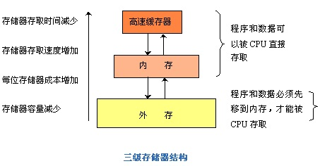
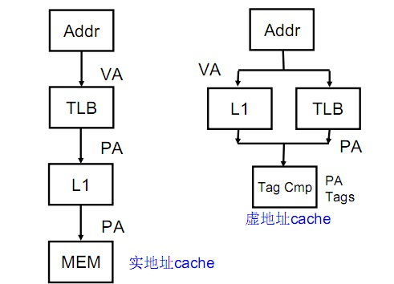
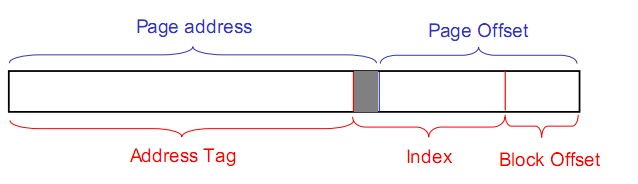
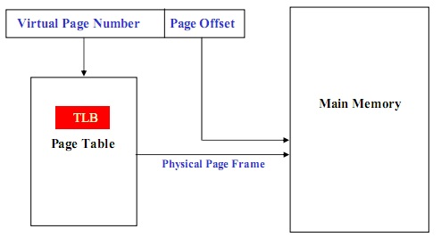

处理器的存储子系统（一）--概述
注：这学期第一次做高性能作业（其他十次都没做…），做完后感觉有点收获，做个总结，算是备忘。
随着工艺水平的提高，集成电路的集成程度越来越高，主频也不断提高，处理器的功能部件的计算能力越来越强（现在已经能够一拍就完成32位定点乘法），处理器的性能瓶颈不再再是处理器核心的计算能力了，而是突出表现为访存的瓶颈上了，正如老大所说，“如何喂饱饥饿的CPU”成了处理器设计的主要问题，因此设计一个高效的，能尽量喂得快点的存储子系统对于当今的处理器设计越来越重要。
由于辅存（如硬盘）的访问速度太慢，根本无法喂饱饥饿的CPU，于是出现了主存，随着处理器性能提高，主存的速度也不够，根据局部性原理，于是出现了Cache，最早Cache做在片外，后来处理器性能提高了，做在外面也不行，于是做到了片内，之后为了更优化Cache，又出现了 L1Cache，L2 Cache，甚至L3 Cache。随着SMP以及CMP的出现，存储一致性问题愈加突出，成为影响程序执行是否正确的一个重要因素。现在处理器的存储层次如下图：

另一方面，随着多任务操作系统的引入，导致了逻辑地址（又叫虚拟地址）和物理地址的区分，为了建立虚拟地址VA和物理地址PA的映射关系，出现了页表机制。但是，直接在主存中查找页表进行虚实地址转化的代价太高了，于是又出现了旁路转换缓冲TLB（又称为页表缓冲，Translation lookaside buffer），还是根据局部性原理，通过将最常使用或者最近使用的页表直接保存在处理器核内，可以大大的提高虚实地址转换的速度，提高处理器的整体性能。
纵观整个处理器存储系统的发展，其基本目的都是喂饱CPU，设计的基本依据都是程序的时间局部性和空间局部性。
ps：写这篇文章的时候，我想起了前几天计算所举办的高通量计算机的研讨，的确，在云计算的背景下，高通量计算机的应用前景非常好，但无论是云计算，还是高通量计算机，做好一套非常好存储系统（这好体现在访问速度快，并且不会影响程序执行的正确性）都是非常必要的。当然，作为一个计算机系统，文件系统也是非常重要的。
ps2：后面两篇文章分别总结下对于单个处理器的存储系统中最重要的两个部分，Cache和TLB。
处理器的存储子系统（二）-- Cache
趁着刚考完高性能，还能记得一点东西，赶快写些cache相关的，算是回应之前那篇关于存储概述的文章.
在现在的CPU里，Cache所占的晶体管数目都达到80%以上，所以设计一个高速度低功耗的Cache很重要。
具体见下表（片内RAM主要就是指Cache，表引自老大的ppt）：
| Processor | % Area (-cost) | %Transistors(-power) |
| Alpha 21164 | 37% | 77% |
| StrongArm SA110 | 61% | 94% |
| Pentium Pro | 64% | 88% |
首先，Cache的作用，这个大家都知道，就是为了加快访存速度，尽量能将CPU喂得饱一点。
其次，Cache的内容，这个大家也都知道，一般就是tag和数据，需要注意的是，数据一般不会是只有一个字节，一般都有32个字节或以上，这些所有数据组成一个Cache行（Cache Line，有时译作Cache块），这时候会有一个offset的概念，就是指在Cache Line内的偏移量。
再次，Cache的相连方式，有全相连，组相连，直接相连，全相连Cache利用率最高，但是，由于Tag位数很多，并且需要全比较，硬件复杂，功耗也高，基本没用。而直接相连Cache利用率太低了，所以几乎不用。一般只用组相连，并且当组数大于8时，增加组数利用率提高不了多少。至于具体的相连方式，随便翻本书，讲的详细的很，不再赘述。
还有一些关于Cache的就是发生Cache Miss时的处理策略，比如说替换算法，写策略（比如写穿透，写分配），但这些东西也是很容易找到的，本文也不赘述，下面重点讲讲设计一个高速度低功耗的 Cache系统的主要技术.其实提高速度和减少功耗往往也不一定是矛盾的，某种方法对这两方面都有提高。
1. 提高Cache速度方面的设计技术
主要有增大Cache容量，增大块大小（可能会增加伪共享），增加相连度等方法，但这些都比较容易理解。下面主要讲一下现代处理器设计里面的常用到的虚地址Cache。
一般来说，Cache里面的地址索引都是用物理地址索引，不会用虚地址索引，但这就会导致一个问题，由于程序里面所用到的地址都是虚地址，因此，这些地址需要先进行转化，转化成物理地址(后面关于TLB的文章会讲到，这就是页表)，才能用来索引访问Cache，这就导致了访问Cache的时间增加了转化时间。那有没有办法把这些转化时间减去呢，答案是有，那就是虚地址Cache，实地址和虚地址Cache的比较如下图：

但是，用虚地址索引会导致一个问题，那就是两个进程的虚地址可能是一样的,而其物理地址不一样，这就会导致一个“错误共享”问题。解决这个问题的一个办法就是每次切换进程都刷一次Cache，但这会增加Cache冷失效，导致很高的代价。另一个方法是在Cache Line 上加一个进程id号的域，这会增加Cache面积，尤其是进程号的取值可以很大的时候。
还有一个问题就是别名问题，和“错误共享”相反，这个问题是，本来需要共享的（比如为了进程中通信），但是由于两个进程对应同一物理地址的虚拟地址不一样，导致共享不成功。解决这一问题的方法是虚索引实Tag技术（Virtually indexed, physically tagged, VIPT）, 即在用Index从cache中读Tag的同时，进行虚实地址转换，可以使用物理地址做tag来比较确定选用索引出来的数据。但这会导致一个问题，就是当页大小（Page size）小于一个Cache组大小的时候，无法保证虚索引和实索引的一致性，此时需要用到也着色技术（Page coloring），这需要操作系统支持。具体如下图：

2. 降低Cache功耗方面的设计
这可以从两方面考虑，一方面是降低失效，可以有Victim Cache技术，硬件预取技术等。其中Victim Cache是在原来的Cache旁加一个小的Buffer（叫做Victim Cache），当换出来的块可以先放到Victim Cache（Victim Cache一般采用全相连），这样的话，下次用到可以直接在此取，不用去主存取，降低了Cache容量缺失率，减少时间的同时也降低了功耗。预取就是当访存总线空闲的时候，把可能用到的数据先取到Cache.
另外一个比较重要的技术就是路预测，比如对于8路组相连的Cache，index索引后会有八个结果，一般情况下需要将Tag和这八个结果一一比较，会消耗比较多的功耗。路预测就是根据局部性原理，猜测会用那路，这样只和那一路比较，只有比较失败的时候才和其他的比较。当预测准确率较高时，可以大大减少比较次数，降低功耗。
处理器的存储子系统（三）-- 页表和TLB
之前一时冲动，说要写三篇关于处理器存储系统的文章，之前写过了概述和Cache，其实写到后面就不太想写了，但是想到不写岂不自己打自己嘴巴，只好硬着头皮把最后一篇关于页表和TLB的写完。既然是硬着头皮写，其质量也就不敢保证了，有错误也在所难免，各位看官需要自行甄别。
在Cache的那篇文章中已经讲到，为了区分不同进程的存储空间，现在多任务的操作系统以及处理器都需要支持虚地址（Virtual Address, VA）实地址（Physical Address, PA）转化，虚实地址转换主要分为两种：
- 由于整个系统的进程数不定，每个进程所需要的内存不定，以及进程切换的不确定性，因此，虚实地址转化不能简单的将某个连续大内存块映射到某个进程（Coarse-grained），必须采取更细粒度（Final-grained）的映射，即将一些可能不连续的小内存块（比如4K大小）一起映射到进程，形成一块连续的虚拟地址。为了记录这些映射信息，需要页表（Page）。但是页表的导入引入了新的问题，那就是每次访存变成了两次，一次查询页表，得到物理地址，第二次通过物理地址取数（事实上有办法把这两个过程部分并行起来，详见Cache的那篇）。为了提高查询页表的速度，现在的处理器都为页表做了一个小Cache，叫做旁路转换缓冲(Translation lookaside buffer, TLB)。
- 直接映射，比如直接将64位的虚拟地址高位抹去，得到物理地址。这主要用于操作系统启动时的那块内存区域。主要是由于系统刚启动时，第1种转化所需要的页表，TLB没有初始化（页表，TLB其实都是操作系统管理的，倘若还用第一种，就陷入了鸡生蛋，蛋生鸡的死循环了），只能用这种最简单粗暴的办法。
由于第二种比较简单，在这里主要讲一下第1种虚实地址转化，即通过页表和TLB进行虚实地址转化。
用固定大小的页(Page)来描述逻辑地址空间，用相同大小的页框(Frame)来描述物理内存空间，由操作系统实现从逻辑页到物理页框的页面映射，同时负责对所有页的管理和进程运行的控制。用页表进行虚实地址转化的基本原理如下图：

首先，用虚地址的高位（叫做虚页号，Virtual Page Num，对应着一个小内存块）查询页表，得到其物理页框（Physical Page Frame）地址，然后用物理页框地址和虚地址的低位（偏移量，Page offset）得到物理地址。其中上面的偏移量决定了每个页表项的大小，在现代通用处理器中，一般为4K。
理论上，页表里面表项的数目和虚地址的高位数目有关，等于虚地址高位所能表示的最大值。因此，其数目非常可观，为了减少页表大小，出现了多级分页技术。
当进行虚实地址转化时，查询页表发现页表不在主存，就会出现缺页例外（Page fault）。缺页中断需要操作系统把所需要的页表文件加载入主存，然后继续查询，这会消耗大量时间。
即使页表在主存中，查询也会消耗大量的时间，因此，利用局部性原理，现代处理器在其内部实现了一个页表的高速缓存，即TLB。当虚实地址转化时，先去TLB中查询页表是否存在，只有不存在时（此时发生TLB miss例外），再去主存中查询，当主存中还没有时，直接去物理存储查询（此时发生缺页例外）。
现代分页技术中，几个最关键的问题是：
一是如何提高TLB命中率，一种办法是加大TLB大小，这种办法很好理解，第二种办法是加大页大小，这样同样大小的存储区域所需要的页表数目大大减少，相当与增大了TLB。
二是如何减少缺失的损耗，其中的一种方法是增加一个类似于victim cache的victim TLB。
三是如何让虚实地址转化和访存并行起来，起码和访问Cache并行起来，方法是实现虚地址Cache，详见Cache篇。
第四个是如何实现低功耗的TLB，现在有很多解决方案，比如说进行TLB预比较，增加一级TLB等。